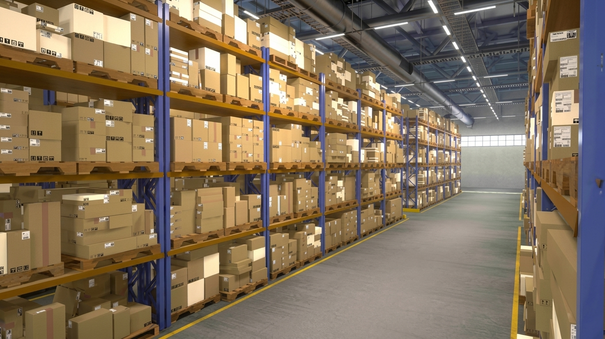
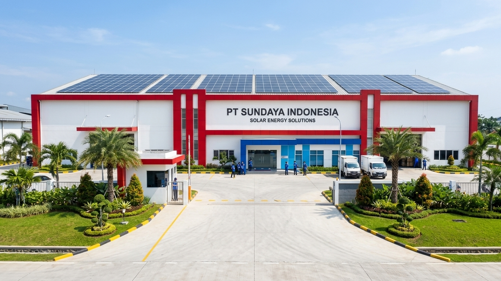

Warehouse Operations & Inventory Management
PT Sundaya Indonesia
Company Overview
PT Sundaya Indonesia operates in the solar energy systems industry, focusing on products and solutions related to solar power technology.
During my employment, I was responsible for overseeing warehouse operations and inventory management across two warehouse areas, supporting the company's material storage, production requirements, and daily operational activities.
My responsibilities involved managing raw material inventory, coordinating warehouse activities, maintaining stock accuracy, supervising warehouse personnel, and ensuring that materials were properly received, stored, recorded, and distributed according to operational requirements.


Warehouse Management Overview
I managed two warehouse areas with different operational functions:
Raw Material Warehouse
Responsible for managing raw materials used in the company's production processes. This included receiving incoming materials, verifying quantities, organizing storage locations, monitoring stock levels, and ensuring material availability for production requirements.
Supporting Warehouse Operations
Responsible for managing the second warehouse area, supporting general inventory operations, material organization, stock monitoring, and the movement of goods between warehouse locations and operational departments.
Both warehouse areas required proper coordination, accurate inventory records, systematic storage practices, and consistent monitoring to maintain smooth daily operations.
Key Responsibilities
Warehouse Operations Management
- Managed daily warehouse activities across two warehouse areas.
- Organized warehouse layouts and storage locations to improve operational efficiency.
- Supervised receiving, storing, picking, issuing, and dispatching activities.
- Ensured materials and goods were handled and stored according to operational procedures.
- Maintained warehouse cleanliness, organization, and safety standards.
- Coordinated daily warehouse activities to support production and business operations.
Inventory & Stock Management
- Monitored raw material inventory and other warehouse stock.
- Maintained accurate inventory records and updated stock movements.
- Conducted regular stock opname (physical inventory counting).
- Reconciled physical stock quantities against inventory records.
- Investigated stock discrepancies and coordinated corrective actions.
- Monitored minimum stock levels and material availability.
- Identified damaged, expired, or unusable materials and coordinated appropriate handling.
Material Receiving & Inspection
- Coordinated incoming material deliveries from suppliers.
- Verified received quantities against delivery documents and purchase records.
- Checked material conditions before accepting and storing items.
- Ensured materials were properly identified, labeled, and assigned to storage locations.
- Reported discrepancies, damaged goods, and receiving issues to relevant departments.
Material Issuing & Distribution
- Coordinated material requests from production and other operational departments.
- Ensured the correct materials and quantities were issued according to authorized requests.
- Monitored material movements between warehouse locations.
- Maintained documentation of incoming and outgoing materials.
- Supported timely material distribution to prevent operational delays.
Stock Control & Reporting
- Prepared daily and periodic warehouse inventory reports.
- Used Microsoft Excel to record, organize, filter, and analyze inventory data.
- Monitored stock balances and inventory movements.
- Maintained documentation for receiving, issuing, and stock adjustments.
- Supported management with inventory information for operational planning and decision-making.
Team Supervision & Staff Development
- Supervised and coordinated a warehouse team of more than 20 employees.
- Assigned daily tasks and responsibilities based on operational priorities.
- Monitored employee productivity and work performance.
- Provided guidance and on-the-job training for warehouse personnel.
- Ensured staff followed warehouse procedures and operational standards.
- Coordinated teamwork between receiving, storage, inventory control, and material distribution activities.
Procurement & Interdepartmental Coordination
- Coordinated with procurement personnel regarding incoming materials and supplier deliveries.
- Communicated with production teams to understand material requirements.
- Reported stock shortages and potential material availability issues.
- Worked with relevant departments to resolve inventory discrepancies and operational challenges.
- Supported material planning to help maintain continuous warehouse and production operations.
Key Skills & Competencies
Warehouse Operations
- Warehouse Management
- Raw Material Management
- Inventory Control
- Receiving & Dispatching
- Material Handling
- Storage Organization
- Warehouse Process Coordination
Inventory Management
- Stock Opname / Physical Inventory
- Stock Reconciliation
- Inventory Reporting
- Stock Movement Tracking
- Stock Discrepancy Investigation
- Material Availability Monitoring
Team & Operational Management
- Team Leadership
- Staff Supervision
- Employee Training
- Task Allocation
- Operational Coordination
- SOP Implementation
- Problem Solving
Technical Skills
- Microsoft Excel
- Data Entry & Inventory Records
- Spreadsheet Reporting
- Sorting & Filtering Data
- Inventory Documentation
Professional Experience & Achievements
Throughout my seven years of experience at PT Sundaya Indonesia, I developed practical knowledge of warehouse operations, inventory management, and team supervision within the solar energy industry.
Key contributions
- Managed warehouse operations across two warehouse areas, including raw material inventory.
- Supervised a team of more than 20 warehouse employees.
- Maintained inventory accuracy through regular physical stock counting and stock reconciliation.
- Improved warehouse organization through systematic material storage and inventory monitoring.
- Supported production activities by coordinating material availability and distribution.
- Maintained warehouse documentation and operational reports using Microsoft Excel.
- Coordinated with procurement and production departments to support smooth material flow.
Professional Development & Transferable Skills
This experience developed a strong foundation in operational management, attention to detail, data accuracy, quality control, and systematic documentation.